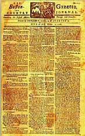

talking history | syllabi | students | teachers | puzzle | about us
|
Scholars In Action presents case studies that demonstrate how scholars Before you move to the next page, read this newspaper article. How does the article describe the event? Can you tell who participated in the protest? Are the political issues and tensions clear? What is puzzling or unclear? Published online February 2003. Cite as: Barbara Clark Smith, "Analyzing Colonial Newspapers," History Matters: The U.S. Survey Course on the Web, http://historymatters.gmu.edu/mse/sia/newspaper.htm, February 2003. |
||
 |
||
| "Providence, RI, March 4, 1775. On Thursday
last, the 2nd instant, about twelve o'clock at noon, the Town Crier gave
the following notice through the Town..." [read full article] |
||